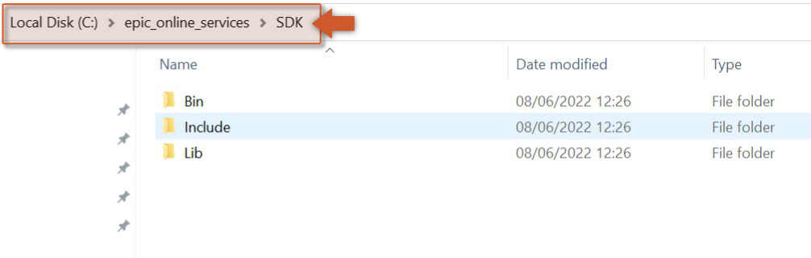
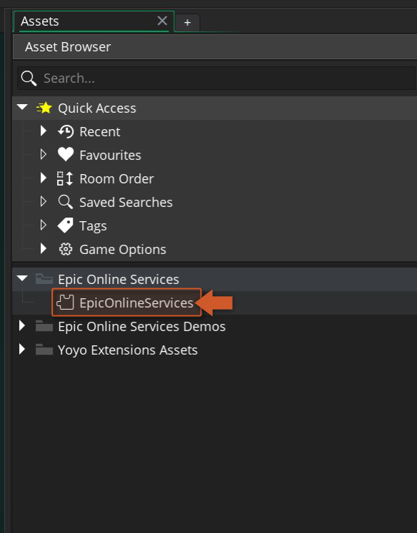
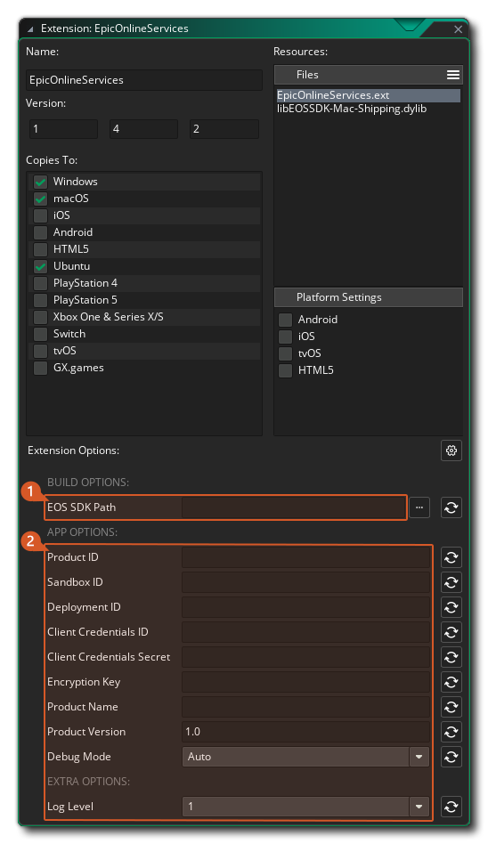

Setup Guide
To use the Epic Online Services API extension you should follow these steps:
- Import this Epic Online Services extension into your project, if you haven't done that already.
- The Epic Launcher App needs to be installed, running and with an account logged in (official site).
-
Download Epic Online Services SDK (C version, 1.15.4) from Epic's Developer Portal and extract the contents of the zip into a directory of your choice (e.g.:
C:\epic_online_services\SDK).  -
To set up your game properties, double click on the EpicOnlineServices extension in your Asset Browser in the IDE. 
-
At the bottom of the extension window you will find all the configurable options of the Epic Online Services. 
-
The options are split into two sections: Building Properties and Game Properties . The first one is a folder path that should point to the extracted folder of step 3, the second section will allow you to configure all possible settings for running and publishing a game to Epic Store. The Product ID, Sandbox ID and Deployment ID must be set.
Note
If you set Debug Mode to Enabled this will force your app to be launched by the EOS launcher. This should only be used when you are ready to send your app to production (DO NOT try to run the game from the IDE while debug mode is disabled).